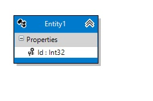

Persistent Entities
Modeling your persistent entities (classes) is the same experience as any other modeling tool – you drag the class onto the design surface from the toolbox, name it, and start adding properties. You won’t model operations (methods), though, since our focus is on creating code for Entity Framework. If you want to add operations, you’ll do that in partial classes.
Adding an Entity
With the designer open, find the Entity tool in your toolbox. Click and hold down the left button, then drag it to the design surface.

You should see a new class appear on the design surface:
|  |
The entity may be collapsed down to its name bar by clicking the chevron at the top right of its display. When collapsed, it may be expanded back to its original size by clicking the chevron again.
Selecting the entity allows you to edit its various properties:
| Property | Description |
| Code Generation | |
| Abstract | Boolean. If true, an abstract class will be generated for this entity. |
| Concurrency | String. Overrides the default concurrency handling strategy. Values are 'Optimistic' and 'None'. See Handling Concurrency with the Entity Framework 6 in an ASP.NET MVC 5 Application. |
| Custom Interfaces | String. Any custom interface(s) this entity should implement. If more than one, separate them with commas - anything here will be generated verbatim into the code in the class definition. |
| DbSet Name | String. The name of the DbSet property in the DbContext for this class. |
| Name | String. The name of this class. |
| Namespace | String. The namespace for this class. |
| Database | |
| Database Schema | String. The database schema name for the table that will back this class. |
| Table Name | String. The name of the table that will back this class. |
| Display | |
| Fill Color | Color. The color for entity's banner on the design surface. |
| Visible | Boolean. If true, the entity will be visible on the design surface. If false, will be hidden. Can also be toggled via the context menu when the entity is selected. |
| Documentation | |
| Comment Detail | String. XML comment <Remarks> section |
| Comment Summary | String. XML comment <Summary> section |
Removing an Entity
To remove an entity, simply select it and hit the Delete key. It will be removed from the model completely without confirmation.
Context Menu
Right-clicking on an entity displays a Visual Studio context menu with some new choices pertinent to that entity.

| Menu choice | Description | ||||||||||||
| Add | One submenu choice, Property, adds a property to the entity. | ||||||||||||
| Collapse | Available when the entity is fully expanded, this action hides the properties so that only the title is visible. | ||||||||||||
| Expand | Available when the entity is fully collapsed, this action shows the properties, revsersing the _Collapse_ action. | ||||||||||||
| Cut, Copy, Paste | You can cut or copy, then paste, classes and enums. The pasted elements will be adjusted so that they don't violate any rules (such as two elements not having the same name), but otherwise the properties will stay the same. If no classes or enums are selected in the designer, the cut and copy options will be disabled. If no classes or enums are in the clipboard, the paste option will be disabled. | ||||||||||||
| Validate | Checks the currently selected entity against the validation rules built into the designer. Errors or warnings are displayed in Visual Studio's Error List window. If no element is selected, this validates the design surface itself. | ||||||||||||
| Validate All | Checks all model elements against the afore mentioned validation rules. Errors or warnings are displayed in Visual Studio's Error List window. | ||||||||||||
| Hide Element | Hides the currently selected entity on the diagram. Any lines to or from that entity will be hidden as well. This does not remove the entity from the model, only makes it invisible in the diagram. Useful for tidying up a diagram that would otherwise be unreadable due to, for example, a common base class that all other classes inherit from. If no entity is selected, this option will be disabled. | ||||||||||||
| Show Hidden Elements | Unhides any elements that were previously hidden, along with their association or inheritance lines. If no elements are hidden, this option will be disabled. | ||||||||||||
| Add properties via Code | Displays a dialog that lets you add multiple properties using the designer's custom property syntax. See "Adding multiple properties" for more details. | ||||||||||||
| Select | One of the features of the Visual Studio property editor is the ability to edit properties of multiple items if they share that property. This submenu gives you the ability to select model elements by type so that you can conveniently edit properties of those elements together (e.g., setting the color of multiple classes all at once). If the pertinent element type isn't present in the designer, that option will be disabled.
| ||||||||||||
| Properties | Switches focus to the Properties window. |